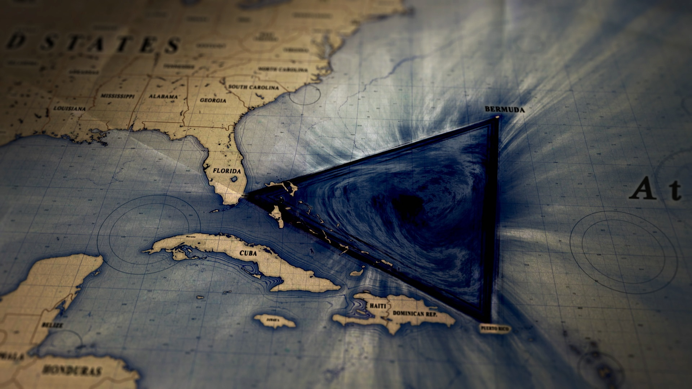

The Bermuda Triangle
The Bermuda Triangle is an area of the Atlanta Ocean between Florida, Bermuda, and Puerto Rico. It became famous because of stories involving missing ships and aircrafts.
- Some believe the lost city of Atlantis lies beneath.
- Flight 19 disappeared in the area in 1945.
- Abandoned ships found drifting without their crews have fueled legends.
